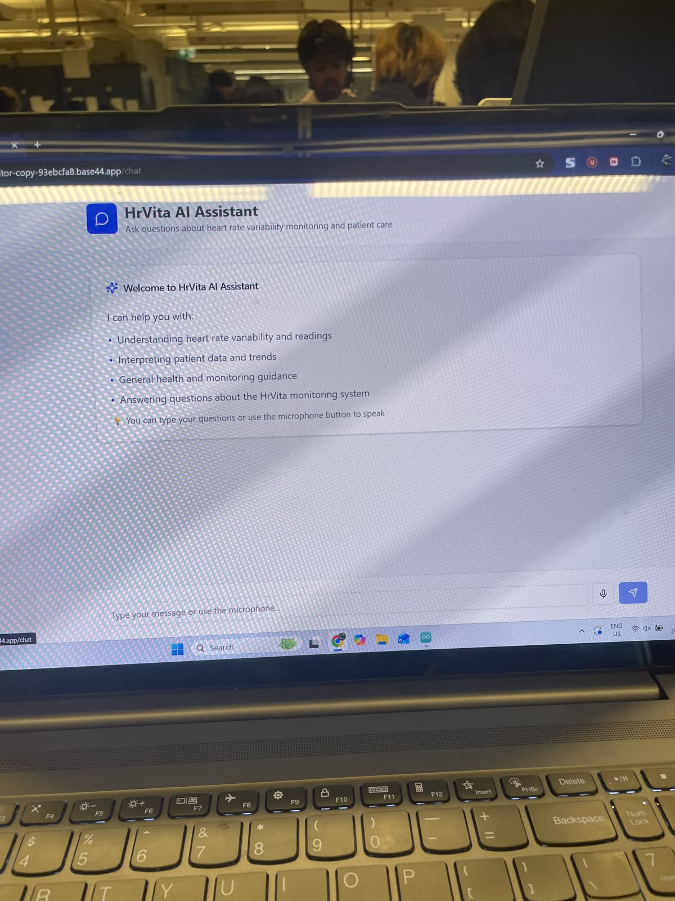

About the Project
HRVita is a clinical-backed IoT system built to predict hospital-induced delirium 2 to 4 hours before it occurs. Delirium affects a significant portion of hospitalized patients and is often missed by staff. HRVita aims to give clinicians an early warning using continuous wrist-based monitoring.
The system uses an ESP32 microcontroller to collect Heart Rate Variability (HRV) and SpO2 data from the patient's wrist in real time. That data streams to a web dashboard where clinicians can view live readings, trend charts, and delirium risk scores. We also built an AI assistant interface that can answer questions about the patient's HRV data and monitoring status.
Built with a team of first-year students as part of my project course at UWaterloo. I worked on the hardware side including the ESP32 integration, sensor wiring, and data transmission.